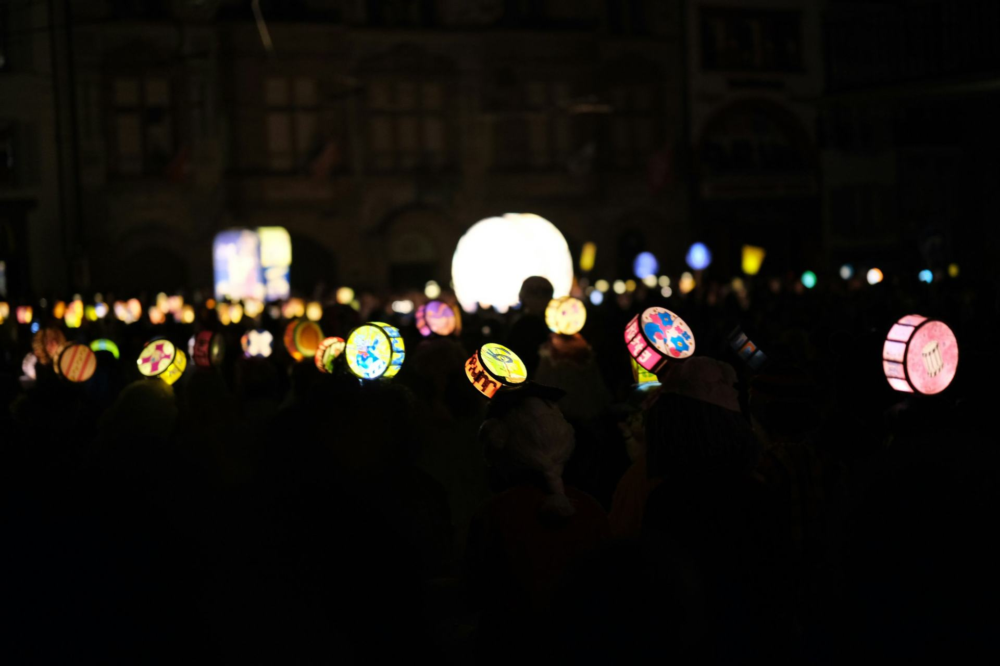
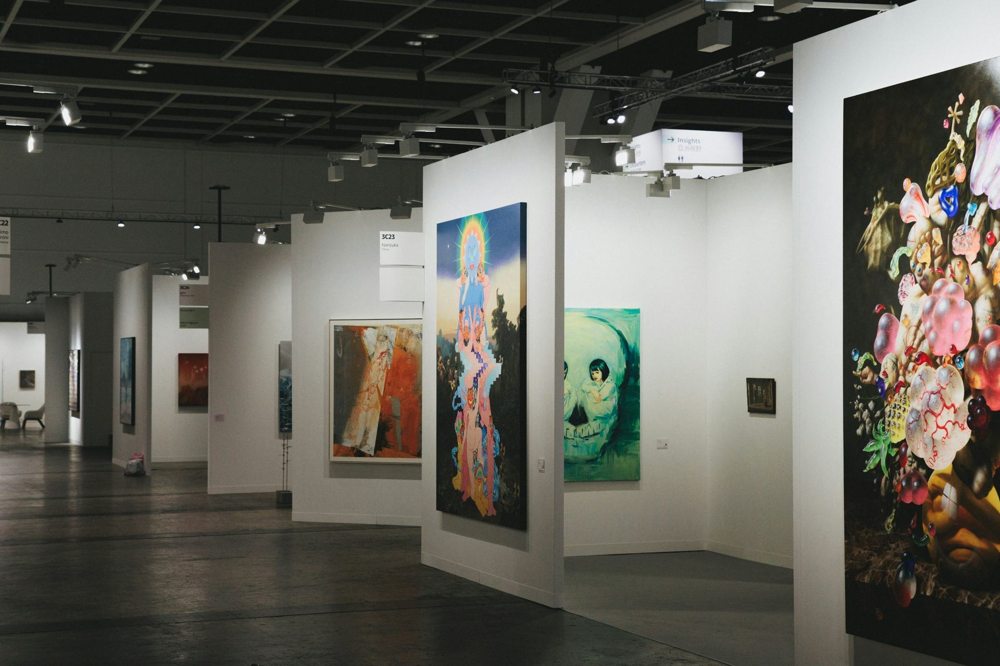
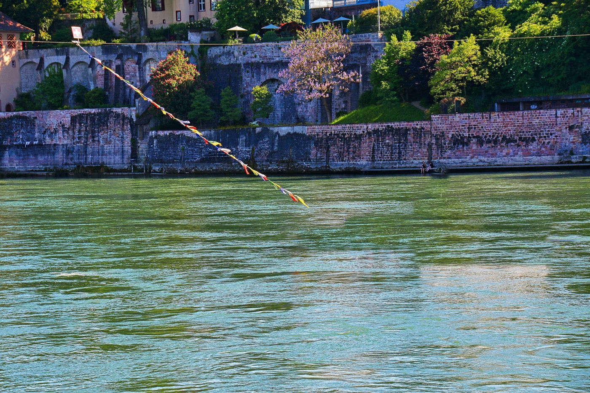
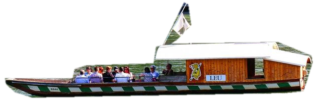
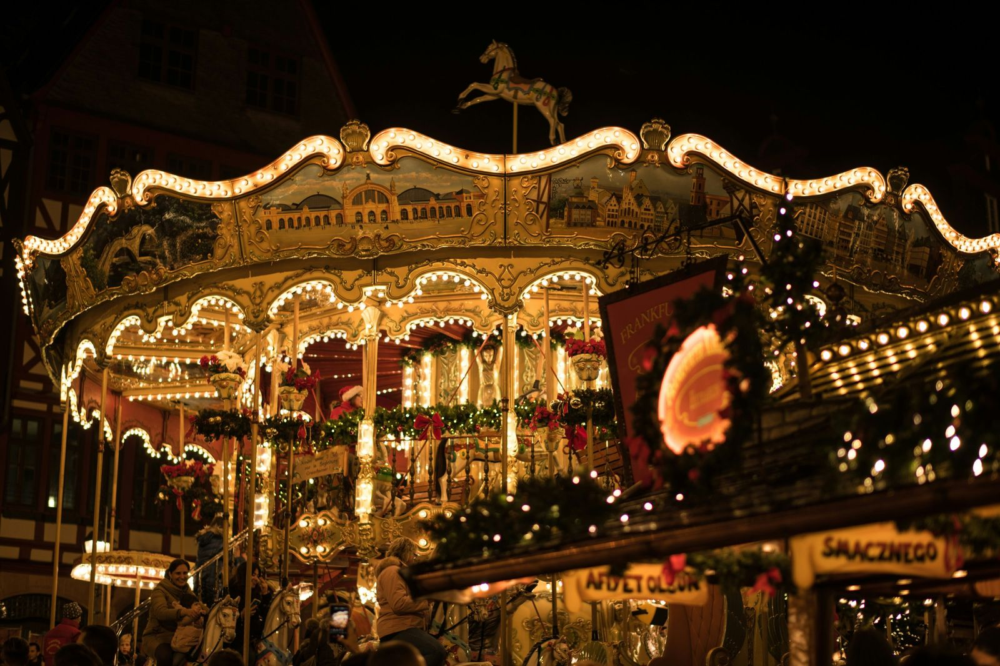
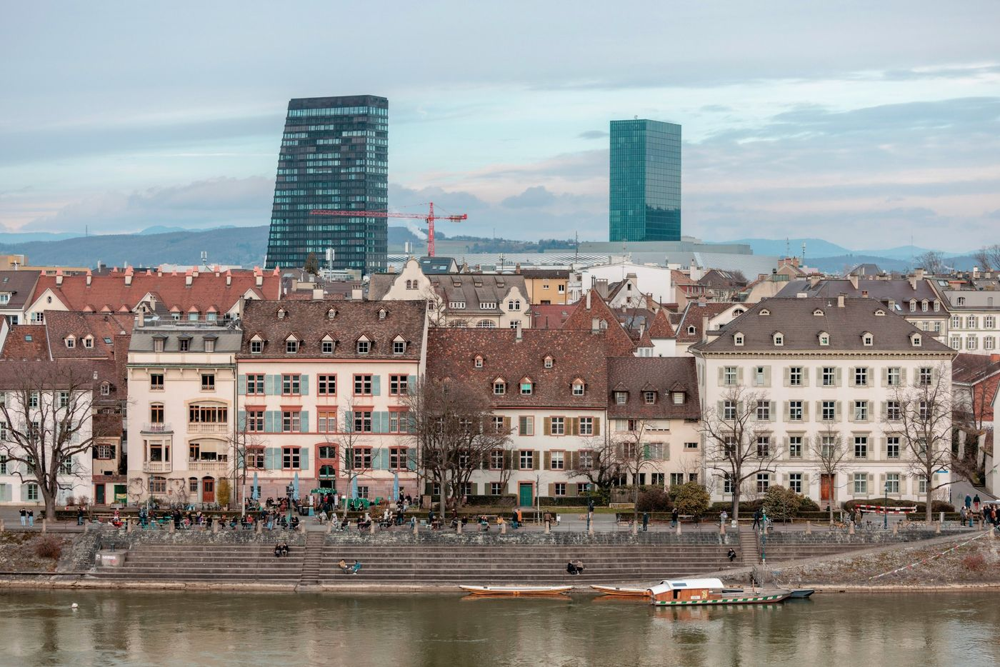

4:00
Morgestraich
The old town is lit up. Press the switch.

Float down the Rhine through the year and see Basel the way a local does.
Photo: Karim Imanuel Fox, Unsplash
Five stops, one river. Each one comes with the tips a local would give you.


Three days that start in the dark. Loud, satirical and full of confetti.
4:00
Morgestraich
The old town is lit up. Press the switch.
Mehlsuppe, a Blaggedde and a few dialect words.
Good to know
Words to know

For one week in June the whole city turns into a gallery.

Book early and go on a weekday morning.
Tips
Words to know

From June the Rhine is the city's pool, ferry route and living room.
Photo: Alain Rouiller, Unsplash


Wickelfisch, Fähri and Buvette.
Tips
Words to know

Rides, lights and roasted chestnuts for about two weeks.
Photo: Ryan Lee, Unsplash
Go on a weekday afternoon and dress warmly.
Tips
Words to know

Lights, mulled wine and Läckerli on two old-town squares.
Photo: Denise Jans, Unsplash

Münsterplatz is the quieter market.
Tips
Words to know

Coffee, dinner, bars, shops, museums and streets for any season.